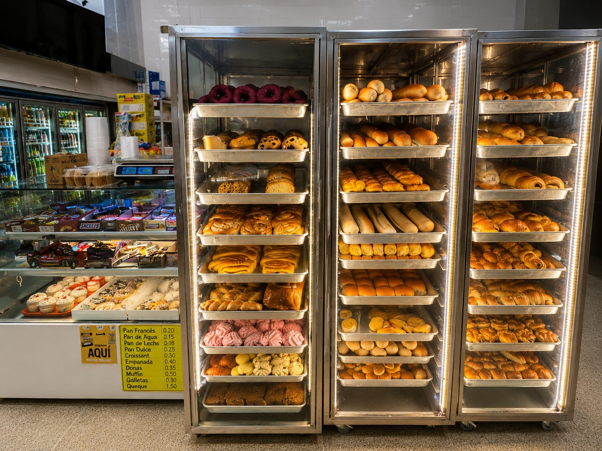

Tu supermercado de confianza
Todo para tu día, cerca de ti.
Carnes frescas, abarrotes, panadería, productos para mascotas, fiestas y mucho más. En Supermercado 38 hacemos que tu compra sea fácil y completa.
Estacionamiento propioPagos con tarjeta y NFCFarmacia incluida


Fresco todos los díasCalidad que se notaMás que una compra
La parada que resuelve tu día.
Ven por lo esencial y descubre todo lo que necesitas para la casa, una celebración o tu mascota. Te atendemos cerca, con variedad y con la confianza de siempre.
- Carnicería con cortes frescos todos los días.
- Panadería, abarrotes, lácteos, verduras y embutidos.
- Fiestas, variedades, sedería, farmacia y mascotas.
Explora la tienda
Un pasillo para cada necesidad.


Ahorra esta semana
Ofertas que hacen rendir tu compra.
Pollo entero
B/. 0.99 lbAceite vegetal
B/. 2.10Pet Master 20 kg
B/. 20.00“
“Buenos productos frescos, precios accesibles y siempre encuentro lo que necesito.”